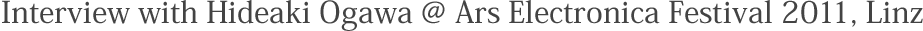
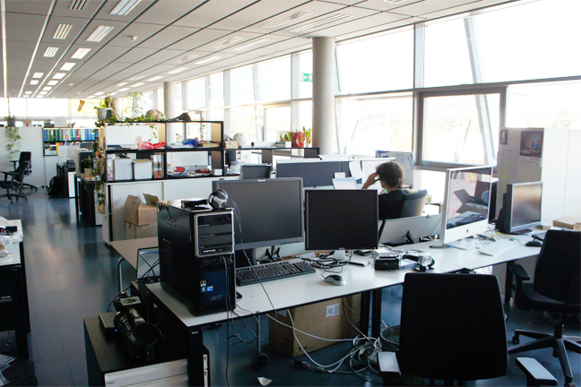
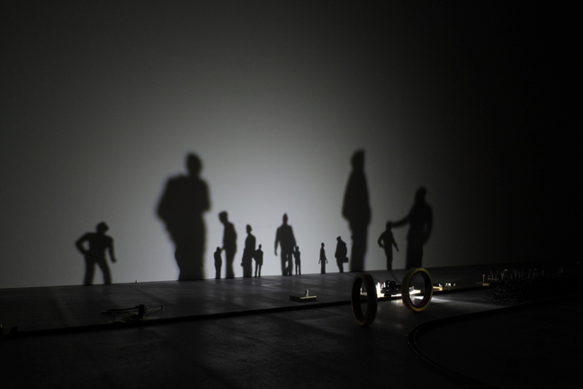
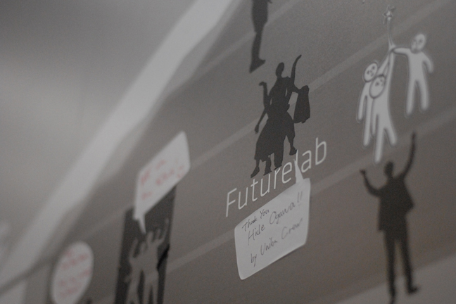
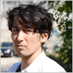

アーティスト、リサーチャーとして多方面で活動されている、アルスエレクトロニカ・フューチャーラボの小川秀明さんとお会いすることができました。
多忙なフェスティバル期間中にも関わらず、貴重な時間を割いて下さった小川さんに感謝を申し上げつつ、ここではその一部をご紹介したいと思います。
|
インターフェイスを超えるものへ、「カタリストラボ (触媒研究所)」 最後に、小川さんが現在注目しているメディアアートの動き、今後注目している領域について伺いました。  フューチャーラボ内部 − 次のテーマとして、小川さんが注目されているものは何ですか？ 2つあるかなと思っています。まず現在のヨーロッパのトレンドの話をすると、「サイエンス」が流行っているように見えます。例えば、ダブリンにサイエンスギャラリーという機関があって、従来のサイエンスセンターの雰囲気でサイエンスを伝えなくなってきています。デザインとかファッションに連動する形でサイエンスがクールな領域として見直され始めてる気がします。  Lost #2 Ryota Kuwakubo しばらくは、「メディアアート」を社会のどこに入れていくかというのは色々やりがいがあるところかなと思っています。作品だけでなくて、今までは美術館とか、ギャラリーとか研究室で起こっていた事が企業のプロダクトに入るかもしれないし、政治の仕組みに入っていくかも知れない。たぶんフィールドはまだまだあります。だけどさっき言っていたみたいに「サイエンス」っていうのは哲学的な作業なので、その中にテクノロジの次の要因を見ておくっていうのは、結構重要なのかなと思います。そんな事が今なんとなく感じているところです。僕も正直じゃあ何を打ち出していくかというのは…マップは常に準備してますけれど。2000年の半ばまでノリノリでやっていたのとはちょっと違うところにきているのは感じますね。  shadowgram + ユニバからのメッセージ |
小川秀明 (おがわ・ひであき) オーストリア・リンツ在住のアーティスト 聞き手 : 東京在住のデザイナー、ディレクター  |
[脚注] クワクボリョウタ： デバイスアーティスト。アルスエレクトロニカーセンターでは、影を利用した作品「Lost#2」と、ベルトで装着できる機械仕掛けの尾「シリフリン」を展示。 真鍋大度(まなべ・だいと)： アーティスト、デザイナー、プログラマー。石橋素氏との作品「particles」が2011年のPrix Ars Electronicaインタラクティブアート部門の準グランプリを受賞。 |